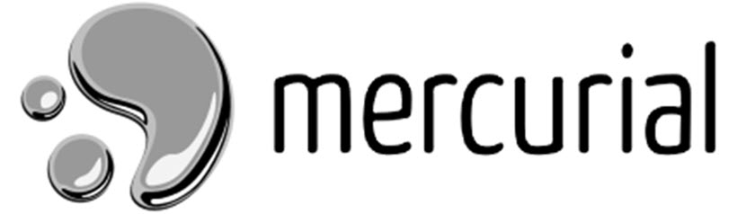

Mercurial
Mercurial — это распределенная система контроля версий, разработанная для быстрого и эффективного управления кодом.
Видео про Mercurial
Основные особенности
- Высокая производительность
- Простота в использовании
- Отличная поддержка больших репозиториев
Основные команды Mercurial
hg init— создать новый репозиторийhg clone [URL]— клонировать существующий репозиторийhg commit -m "Сообщение"— сохранить изменения
Пример использования
$ hg init
$ hg add .
$ hg commit -m "Первый коммит"
$ hg push